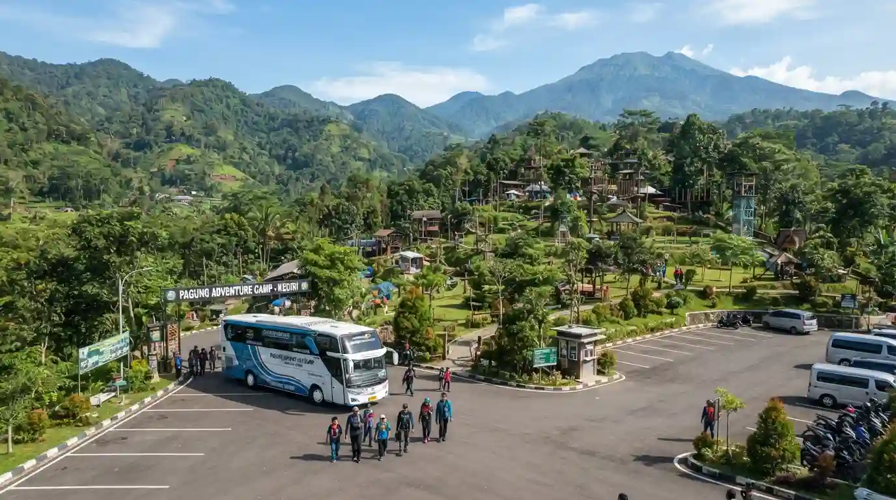
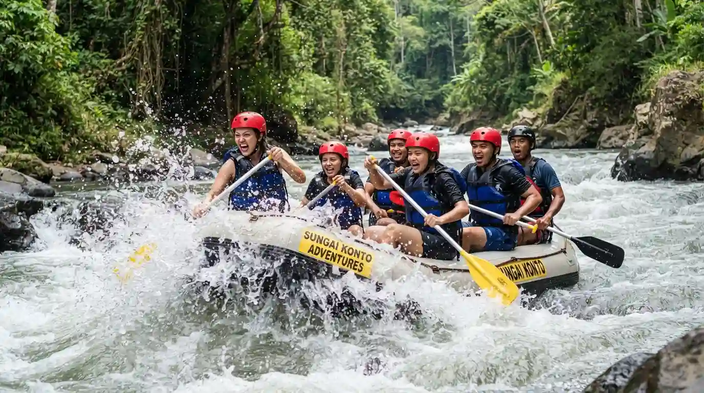
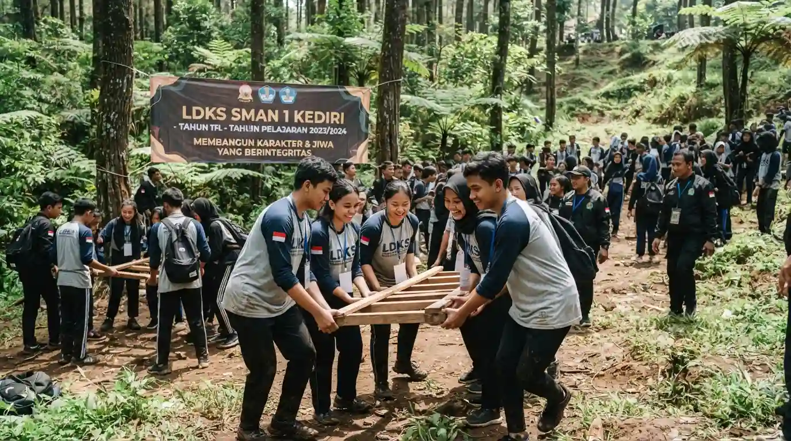
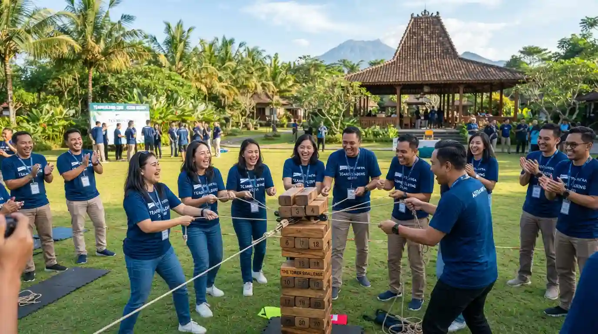
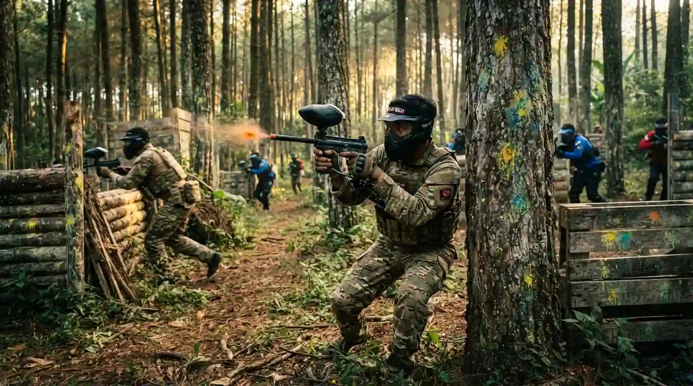

Ice Breaking & Games
15 Ide Ice Breaking Ringkas Tanpa Alat untuk Membuka Acara Gathering
Panduan praktis fasilitator mencairkan suasana kaku antar divisi dalam 15 menit pertama tanpa perlu properti rumit.
Baca Ulasan →Referensi komprehensif dan panduan teknis bagi HRD, panitia instansi BUMN/swasta, pimpinan komunitas, serta dewan guru untuk merancang kegiatan outbound berdampak nyata, aman berlisensi BNSP, efisien secara anggaran (RAB), dan berkesan di sejuknya lereng Gunung Wilis & Kediri Raya.
Panduan praktis fasilitator mencairkan suasana kaku antar divisi dalam 15 menit pertama tanpa perlu properti rumit.
Baca Ulasan →
Ulasan mendalam kondisi jalan, elevasi tanjakan, serta radius putar armada bus di Besuki, Dolo, Sumber Ubalan, dan Bukit Gandrung.
Baca Ulasan →
Checklist audit wajib: sertifikasi FAJI para skipper, kalibrasi pelampung CE standard, prosedur rescue darurat debit air deras, dan pertanggungan...
Baca Ulasan →
Tinggalkan paradigma perpeloncoan kuno. Temukan pendekatan psikologi positif melalui tantangan problem-solving alam terbuka yang menumbuhkan...
Baca Ulasan →
Bedah komponen biaya mulai dari sewa venue, sound system, konsumsi prasmanan, honor master trainer, hingga dokumentasi drone agar...
Baca Ulasan →
Lebih dari sekadar tembak-menembak. Pelajari bagaimana skenario perebutan bendera dan alokasi peluru terbatas mengasah decision-making cepat...
Baca Ulasan →